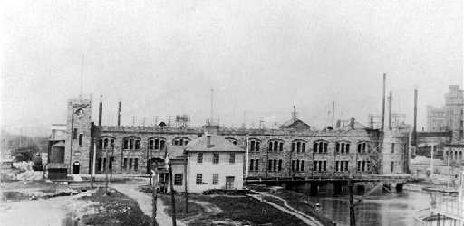

Home • Hydroelectric Power • Pulp & Paper • Transportation • Mining • Forestry • Algoma Steel • Algoma Tubes
Ontario Lake Superior Power Company
|
Michigan Lake Superior Power Company Ontario Lake Superior Power Company
|
The Ontario and Sault Ste. Marie Water, Light and Power Company acquired by Francis Hector Clergue and Edward Varian Douglas in October, 1894 underwent a dramatic metamorphosis in the months immediately following the acquisition. Clergue and Douglas assumed control of the operation of the Company at a meeting held on 31 January 1895. They personally assumed seats held by existing members of the Board of Directors and then ensured that the balance of the members of the Board resigned in order to replace them with Directors of their own choosing including Bertrand Joseph Clergue, Henry C. Hamilton and John Bogart, one of the New York investors. Once the new Board had been formed, Clergue was named President and Douglas was named Treasurer. Clergue and Douglas held these positions until 5 June 1895 when a formal election of officers was held. Edward Douglas was elected President, Francis Clergue Vice President, Walter Douglas (Edward’s brother) Treasurer and Henry Hamilton Secretary. One of the first steps taken by the new Board was to change the name of the Company to the Lake Superior Power Company and to transfer all of the fully paid up stock in the Ontario and Sault Ste. Marie Water, Light and Power Company to the Lake Superior Power Company. With this step out of the way, the Power Company got down to business in earnest. Work began immediately on the enlargement of the existing power canal so as to permit the development of 20,000 horse power of hydroelectricity rather than the originally planned 5,000 horsepower. The Board authorized Francis Clergue to enter into a contract for the purchase of the water power canal in Sault Ste. Marie, Michigan. This action was followed closely with a lease agreement between the Power Company and the Tagona Water and Power Company for the use of a tract of land that was the original site of the Laird and Henderson Mill. By mid-1895, the shares of stock in the Sault Ste. Marie Pulp and Paper Company to the Lake Superior Power Company as payment of rent as well as the shares of stock that had been transferred by the Tagona Water and Power Company for the same purpose had in turn been transferred to Edward Douglas and Frank Spencer Lewis for promotional purposes. In a somewhat unorthodox move, at a meeting held on 16 August 1895 at which only Clergue, Douglas and Hamilton were present, those Directors resolved that inasmuch as Francis H. Clergue and Edward V. Douglas had purchased the original stock in the Ontario and Sault Ste. Marie Water, Light and Power Company, personally agreeing to pay for the stock and further, inasmuch as Clergue and Douglas had incorporated the Tagona Water and Light Company and the Sault Ste. Marie Pulp and Paper Company and then promoted these companies that Francis H. Clergue and Edward Varian Douglas be allocated stock with a market value of $1,261,050 and a cash settlement in the amount of $108,450.  The Lake Superior Power Company experienced its first cash flow problem in March, 1898. In order to meet obligations involving the purchase of certain lands in Sault Ste. Marie, Ontario and Sault Ste. Marie, Michigan, the Company was forced to borrow $55,000 from the Provident Life and Trust Company of Philadelphia for a period not to exceed three (3) years. An additional $75,000 was borrowed from the Imperial Bank of Canada in June of 1898. This pattern of borrowing continued throughout the Clergue years. Like each of the other Allied Companies, the Power Company had so many projects in progress that they devoured all of the available cash without replenishing the coffers. Despite its tenuous financial position, the Lake Superior Power Company constituted the nexus of the burgeoning industrial empire developed by Francis H. Clergue and it continued to hold that position until 1901 when its power was eclipsed by that of Algoma Steel. The strength of the Power Company rested not only with its control of the water power – the foundation of each of the other Allied Companies – but also in its ownership of mining interests, specifically the Helen Mine at Michipicoten. In fact, it was the Power Company’s ownership of the Helen Mine that kept its finances in the black. The Lake Superior Power Company survived the collapse and reorganization of the old Consolidated Lake Superior Corporation. It remained in receivership and under the control of the Receiver, Benjamin F. Fackenthal until May, 1904 when C.D. Warren became the President and Receiver and Cornelius Shields was appointed as the General Manager. The Power Company was the last of the Canadian subsidiaries to be discharged from bankruptcy when it received its discharge on 27 September 1905. Although discharged from his position as General Manager of the Lake Superior Power Company and forced to resign as President of the Board of Directors in April of 1903, Clergue remained a member of the Board of Directors until 1907. In this way, stayed in touch with the basis for his industrial empire at Sault Ste. Marie. |